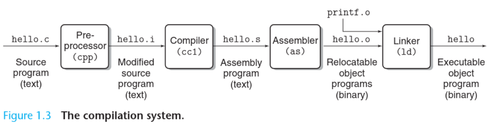

1.2 Programs Are Translated by Other Programs into Different Forms
Consider this source code of a hello C program which prints Hello world on the screen:
#include <stdio.h>
int main(){
printf("Hello world\n");
return 0;
}
- This program begins life as a high-level C program that can be read and understood by humans as discussed
earlier.
- These individual C statements must be translated by other programs (compilers) into a sequence of low-level
machine-language instructions.
- These instructions are then packaged in a form called an executable object program (object
programs are also referred to as executable object files)
- On a Unix system, the translation from source files to object files is performed by a compiler
driver.
The following command invokes the gcc compiler which is the native compiler for C programs in Unix systems
gcc -o hello hello.c
The Stages of Compilation

- The Pre-Processor handles certain directive and instructions before the code is compiled. For
example, whenever an
#include statement is encountered, the pre-processor replaces it with the
content of the file included.
- The Compiler checks for errors and translates the high level code into assembly instructions.
Note that this step is the most significant as the high level statements get "translated" into assembly
instructions, and depending on the optimization level, the assembly produced might not correspond to the
high level code as expected (but still carry out the same task of course). At this stage, the resulting file is
still a text file which contains assembly instructions.
The command
gcc -S hello.c will output a hello.s file which contains the assembly
instructions without proceeding to invoke the assembler.
- The Assembler turns assembly instructions into machine code. This is mostly a
one-to-one mapping between assembly instructions understood by humans (like
mov eax ebx) to binary
instructions understood by the CPU (like 0x89 0xD8 which are 10001001 11011000).
- The Linker combines functions and libraries, for example it resolves functions called in one
file but defined in another
Takeaway Concept
Note that before assembly code is turned into an object file, it is still a text file. For example, if you open
hello.s with a text editor, you’d see assembly instructions. But once the assembler takes this
hello.s file and turns it into a hello.o file, it is no longer a text file and its bytes
do not represent ASCII characters anymore. Now it’s an object executable file containing binary instructions the CPU
can understand.
Previous
Next